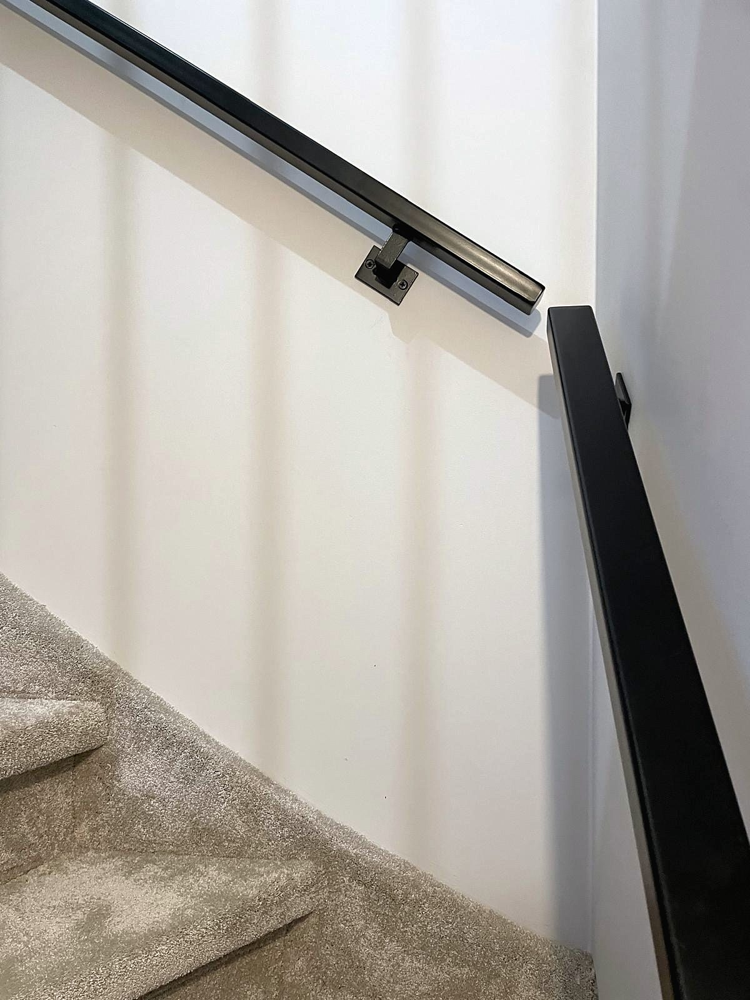
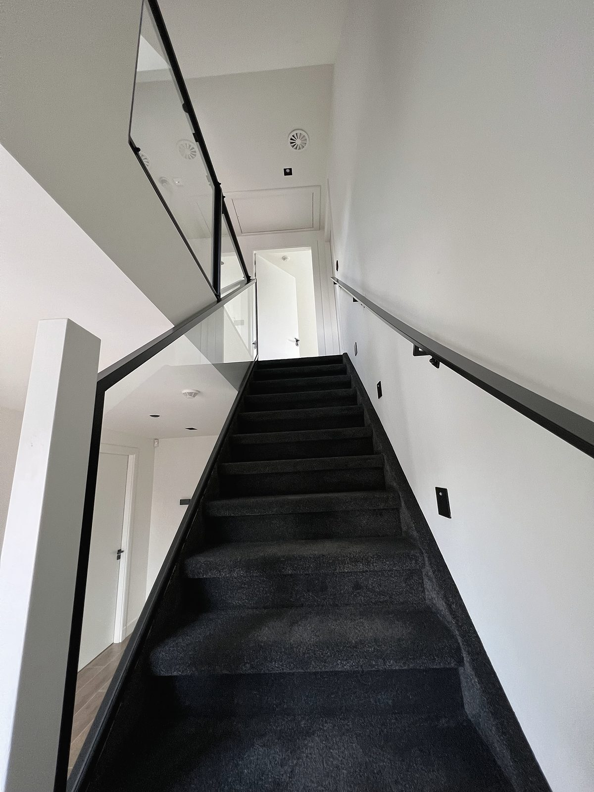
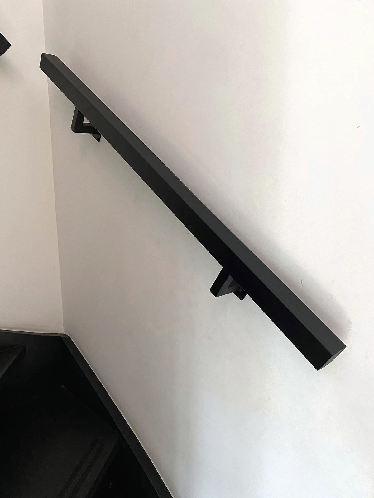

i
Het profiel
Een stalen koker van 50 × 30 of 50 × 20 millimeter, plat tegen de wand. Of rond, Ø 50. Elk uiteinde sluiten we af met een vlakke kap, zodat de lijn strak eindigt.
- Profielen
- 50 × 30 · 50 × 20 · Ø 50
- Materiaal
- Staal
Stalen wandleuningenUlft
Wandleuningen van staal, op de millimeter gemaakt in onze werkplaats en door ons gemonteerd. Strak, stil en voor jaren.

01Geselecteerd werk
Elke leuning op deze pagina is door ons gemaakt en gemonteerd.
Eén lijn.
Puur staal.
Gemaakt om te blijven.
02Vakmanschap

i
Een stalen koker van 50 × 30 of 50 × 20 millimeter, plat tegen de wand. Of rond, Ø 50. Elk uiteinde sluiten we af met een vlakke kap, zodat de lijn strak eindigt.

ii
Een vierkante wandplaat met een haakse arm. Klein, sterk en in dezelfde kleur als de leuning, zodat het oog alleen de lijn ziet.
iii
Twee lagen poedercoating, mat en egaal. Prettig in de hand en bestand tegen dagelijks gebruik. In mat zwart, goud, wit, zandbeige of een RAL-kleur naar keuze.
03Configurator
04Zo werken wij
Je stelt je leuningen samen en ziet direct een indicatie van de prijs.
We lopen je maten en situatie na, en nemen contact op als iets niet klopt.
Een heldere offerte, zonder verrassingen. Pas na jouw akkoord gaan we maken.
Gemaakt in Ulft en door ons geplaatst. Of afgehaald of bezorgd, als je dat liever hebt.
05Vragen
Stalen wandleuningen op maat: rechthoekig (50 × 30 of 50 × 20 mm, plat tegen de wand) of rond (Ø 50 mm), met tweelaagse poedercoating. Elke leuning is recht; om een hoek plaatsen we per stuk wand een aparte leuning.
Meet langs de wand waar de leuning komt, schuin mee met de trap, van begin tot eind. Dus niet de horizontale lengte. Twijfel je? Vink in de configurator aan dat wij komen inmeten.
Dat hangt af van de lengte, het aantal leuningen en je keuzes. In de configurator zie je direct een indicatie. De definitieve prijs staat in je offerte.
Alle drie kan. Je kiest het in de laatste stap van de configurator.
Nee. We controleren eerst je maten en situatie en sturen je een offerte. Pas na jouw akkoord gaan we maken.